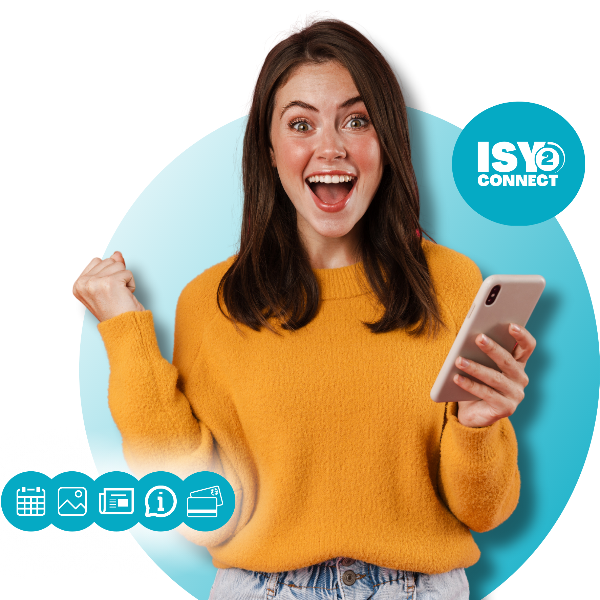

SFür Unternehmen, Verbände und andere Organisationen. Wir erstellen Ihre eigene Business-App, mit der Sie Ihre Mitarbeiter, Ihr Netzwerk und Ihre Kunden erreichen! Dieses kann im Apple- oder Google Play Store heruntergeladen werden. Ab sofort die gesamte Kommunikation unter einem Dach.
Wir sind davon überzeugt, dass die Zentrierung und Verbesserung von Kommunikation und Information auf ein höheres Niveau gebracht werden kann und sollte. Dies führt zu mehr Engagement, Handel, Effizienz und Professionalität für Ihr Unternehmen. Das Gewirr aus Online- und Offline-Informationen in allen Formen und Größen ist passé.
Durch mehr als zwei Jahrzehnte erfolgreicher Pionierarbeit und Wissenserwerb im Bereich Kommunikationssysteme und Apps haben wir die Business-App für jede Art von Partnerschaft entwickelt.
Was kann ich in meiner ISY-App tun?
Chatten Sie in Gruppen oder privat
Zahlungen veranlassen
Sammeln Sie Dokumente
Gehaltsabrechnungen hochladen
Kalender verwalten
organisieren
Senden Sie Push-Benachrichtigungen
& viel mehr!

Die gesamte Kommunikation unter einem Dach!
Im digitalen Zeitalter wird die Fülle an Kommunikationstools oft überwältigend. Sie haben einen Kalender für Termine, WhatsApp für Chats, E-Mail für Gehaltsabrechnungen und so weiter. Die Verbreitung dieser Tools kann zu Verwirrung, verpassten Nachrichten und unnötigem Stress führen. Hier kommt ISY2CONNECT ins Spiel.
Wir haben ein innovatives Kommunikationssystem geschaffen, das alle Ihre Bedürfnisse auf einer nahtlosen Plattform vereint. Ob Sie chatten, Dokumente austauschen, Zahlungen veranlassen oder eine Veranstaltung ankündigen möchten ... ISY2CONNECT macht es einfacher als je zuvor.
Diese Plattform ist auf Benutzerfreundlichkeit ausgelegt. Wir erstellen für Sie Ihre eigene App, die Sie auf Ihrem Laptop, Tablet oder Telefon nutzen und im Google Play oder Apple Store herunterladen können.
Dies ist der Schritt hin zu einer einfacheren und effizienteren Kommunikation. Bleiben Sie mit Ihren Kunden und Mitarbeitern in besserem Kontakt als je zuvor!
Verabschieden Sie sich vom unordentlichen und fragmentierten digitalen Arbeitsplatz. Übernehmen Sie die Kontrolle über Ihre Kommunikation und entdecken Sie, wie einfach alles mit ISY2CONNECT sein kann.
Warum ISY wählen?
Eine App für alles
Zentrale Steuerung
Weniger Verwirrung
Erhöhen Sie das Engagement
Bessere Zusammenarbeit
Optimieren Sie den Kundenservice
Zielgruppen effektiv erreichen
und vieles mehr
Paul Hendrikx - Leiter Personal
"ISY hat unser Unternehmen revolutioniert! Alle unsere Prozesse können jetzt ganz einfach in einer App verwaltet werden.
Das hat unsere Effizienz gesteigert, Kosten gespart und unsere Daten geschützt. Darüber hinaus ist es natürlich toll, eine eigene App zu haben!"
.png)
.png)